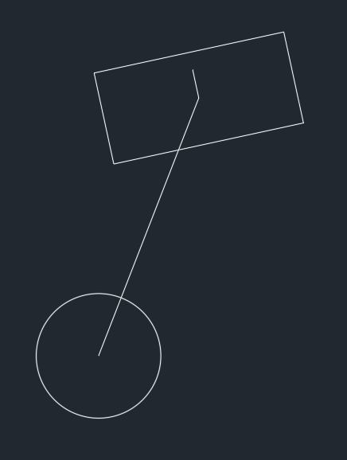
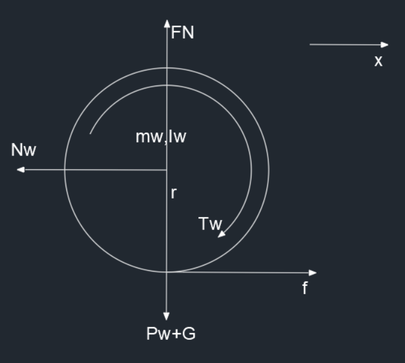
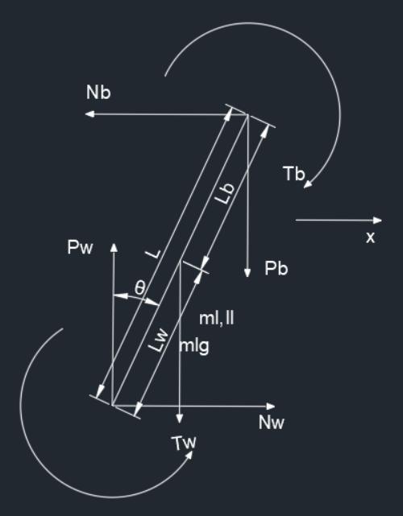
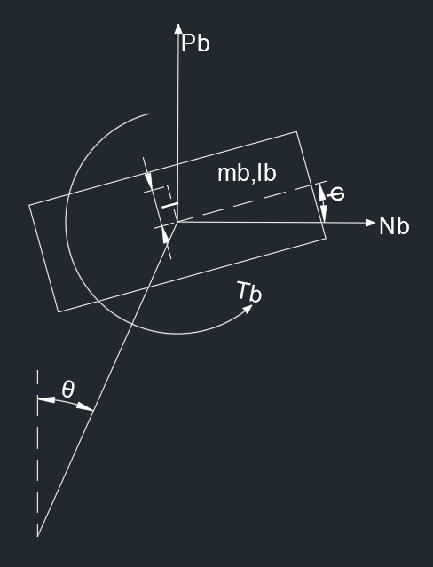
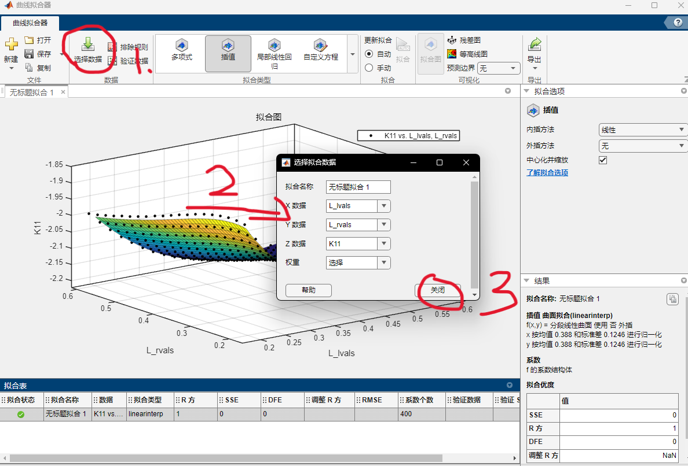
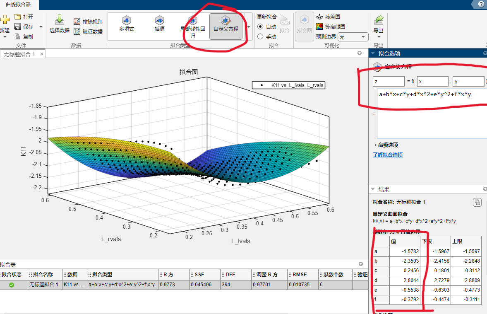
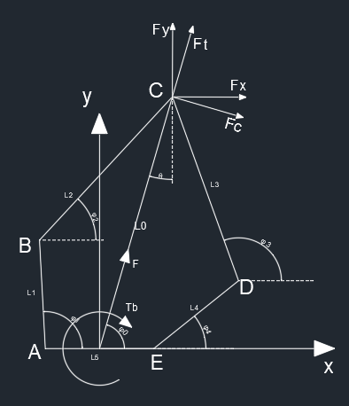
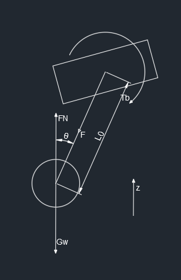

双轮足式机器人控制器设计
Table of Contents
注意方向问题！意方向问题！方向问题！向问题！问题！题！
机体解算时所用到的角度力矩方向都是顺时针为正（从右侧看），但是在 VMC 和腿部五连杆解算中，几乎都是逆时针为正，但是有一点，关节电机的转矩为顺时针为正，所以读者一定要注意这一点
单侧系统状态方程求解
首先双轮足式机器人可以将模型化简为一个倒立摆模型，如下

分块开始分析
轮子

水平方向上
$$ m_w\ddot{x}=f-N_w $$竖直方向上
$$ F_N=P_w+G $$转矩
$$ I_w\frac{\ddot{x}}{r}=T_w-fr $$联立消去 $f$ 得到
$$ \ddot{x}=\frac{T_wr-N_wr^2}{I_w+m_wr^2}~~~~{1} $$摆杆

水平方向上
$$ m_l(\ddot{x}+\frac{\partial^2}{\partial t^2}L_w\sin\theta)=N_w-N_b~~~~{2} $$竖直方向上
$$ m_l\frac{\partial^2}{\partial t^2}L_w\cos\theta=P_w-P_b-m_lg~~~~{3} $$转矩
$$ I_l\ddot{\theta}=T_b-T_w+(P_bL_b+P_wL_w)\sin\theta-(N_bL_b+N_wL_w)\cos\theta~~~~{4} $$机体

水平方向上
$$ m_b(\ddot{x}+\frac{\partial^2}{\partial t^2}L\sin\theta-\frac{\partial^2}{\partial t^2}l\sin\varphi)=N_b~~~~{5} $$竖直方向上
$$ m_b(\frac{\partial^2}{\partial t^2}L\cos\theta+\frac{\partial^2}{\partial t^2}l\cos\varphi)=P_b-m_bg~~~~{6} $$转矩
$$ I_b\ddot{\varphi}=T_b+N_bl\cos\varphi+P_bl\sin\varphi~~~~{7} $$根据上述得到的 ${2},{3},{5},{6}$ 联立，得到中间变量 $P_w,N_w,P_b,N_b$ 的表达式，得
$$ \left\{\begin{aligned}&P_w=m_b(\frac{\partial^2}{\partial t^2}L\cos\theta+\frac{\partial^2}{\partial t^2}l\cos\varphi)+m_bg+m_l\frac{\partial^2}{\partial t^2}L_w\cos\theta+m_lg\\&N_w=m_l(\ddot{x}+\frac{\partial^2}{\partial t^2}L_w\sin\theta)+m_b(\ddot{x}+\frac{\partial^2}{\partial t^2}L\sin\theta-\frac{\partial^2}{\partial t^2}l\sin\varphi)\\&P_b=m_b(\frac{\partial^2}{\partial t^2}L\cos\theta+\frac{\partial^2}{\partial t^2}l\cos\varphi)+m_bg\\&N_b=m_b(\ddot{x}+\frac{\partial^2}{\partial t^2}L\sin\theta-\frac{\partial^2}{\partial t^2}l\sin\varphi)\end{aligned}\right. $$带入 ${1},{4},{7}$ 中，并且利用 matlab 的符号求解工具解。
设定
$$ X=\begin{bmatrix}\theta\\\dot{\theta}\\x\\\dot{x}\\\varphi\\\dot\varphi\end{bmatrix}\\U=\begin{bmatrix}T_w\\T_b\end{bmatrix} $$最终求解对应的雅各比矩阵，就是 A 和 B
|
|
最终得到结果，有点复杂，之前那个是解算出错了 T_T
这就是系统状态空间方程
控制器设计
LQR 控制器
首先是 LQR 控制器。是一个比较常用的控制器，设计起来也比较简单。
推导过程与一般的 LQR 无异，所以直接调用 matlab 函数来求得对应的 K，最终需要拟合出一个 K 关于杆长的函数
|
|
其中的 Q 和 R 就是系统状态与系统输入的权重，越大表示越在意
最终需要将控制器反馈增益矩阵拟合为关于杆长的一元三次方程，具体的拟合代码为
|
|
不知道为啥，喜欢上使用 Curve Fitting Toolbox 了，不想自己写代码了
Hinfinty 控制器
由于默认系统的传感器读取是没有噪声的，所以就把噪声的增益都设置为 0
推导过程与一般的 Hinfinty 控制器无异，所以直接放出 matlab 中的代码，可调试不同的 $\gamma$ 值来使系统有不同的表现。
|
|
二阶 LADRC
LTD
这是由二阶低通滤波器来得到的，只需要更改 r 值， $r$ 值越大到达设定值 $v$ 的时间就越短
$$ X=\begin{bmatrix}x_r\\\dot{x_r}\\\theta_r\\\dot{\theta_r}\\\varphi_r\\\dot\varphi_r\end{bmatrix}\\U=\begin{bmatrix}Tw\\Tb\end{bmatrix} $$由于系统中状态有 6 个，所以需要 3 个低通滤波器，这里的 R 表示输入的期望值
$$ \dot{X}=AX+BR=\begin{bmatrix}0&1\\-r^2_1&-2r_1\\0&1\\-r^2_2&-2r_2\\0&1\\-r^2_3&-2r_3\end{bmatrix}X+\begin{bmatrix}0\\r_1^2\\0\\r_2^2\\0\\r_3^2\end{bmatrix}R $$所以得到离散型的系统状态方程
$$ x_r(k+1)=h\dot{x}_r(k)+x_r(k)\\\\ \dot{x}_r(k+1)=h(-r_1^2x_r(k)-2r_1\dot{x_r}(k)+r_1^2R_{\dot x})+\dot{x_r}(k)\\\\ \theta_r(k+1)=h\dot{\theta}_r(k)+\theta_r(k)\\\\ \dot{\theta}_r(k+1)=h(-r_2^2\theta_r(k)-2r_2\dot{\theta_r}(k)+r_2^2R_{\dot\theta})+\dot{\theta_r}(k)\\\\ \varphi_r(k+1)=h\dot{\varphi}_r(k)+\varphi_r(k)\\\\ \dot{\varphi}_r(k+1)=h(-r_3^2\varphi_r(k)-2r_3\dot{\varphi_r}(k)+r_3^2R_{\dot{\varphi}})+\dot{\varphi_r}(k) $$LESO
对于每一对系统状态（$x,\dot{x}$）都需要设计一个扩张状态观测器，所以令
$$ S_1=\begin{bmatrix}x_1\\x_2\\x_3\end{bmatrix}\\\\ S_2=\begin{bmatrix}\theta_1\\\theta_2\\\theta_3\end{bmatrix}\\\\ S_3=\begin{bmatrix}\varphi_1\\\varphi_2\\\varphi_3\end{bmatrix} $$并且有
$$ x_1\rightarrow x\\\\ x_2\rightarrow \dot{x}\\\\ x_3\rightarrow f_x\\\\ \theta_1\rightarrow \theta\\\\ \theta_2\rightarrow \dot\theta\\\\ \theta_3\rightarrow f_{\theta}\\\\ \varphi_1\rightarrow \varphi\\\\ \varphi_2\rightarrow \dot{\varphi}\\\\ \varphi_3\rightarrow f_{\varphi} $$可以得到
$$ \dot{Z}=AZ+Bu+L(x_1-z_1)\\\hat{y}=CZ $$并且有
$$ L_1=\begin{bmatrix}\beta_{11}\\\beta_{12}\\\beta_{13}\end{bmatrix}\\\\ L_2=\begin{bmatrix}\beta_{21}\\\beta_{22}\\\beta_{23}\end{bmatrix}\\\\ L_3=\begin{bmatrix}\beta_{31}\\\beta_{32}\\\beta_{33}\end{bmatrix} $$带入可以得到
$$ \begin{bmatrix}\dot{x_1}\\\dot{x_2}\\\dot{x_3}\end{bmatrix}=\begin{bmatrix}-\beta_{11}&1&0\\-\beta_{12}&0&1\\-\beta_{13}&0&0\end{bmatrix}\begin{bmatrix}x_1\\x_2\\x_3\end{bmatrix}+\begin{bmatrix}0&\beta_{11}\\b_1&\beta_{12}\\0&\beta_{13}\end{bmatrix}\begin{bmatrix}u\\y\end{bmatrix}\\\\ \begin{bmatrix}\dot{\theta_1}\\\dot{\theta_2}\\\dot{\theta_3}\end{bmatrix}=\begin{bmatrix}-\beta_{21}&1&0\\-\beta_{22}&0&1\\-\beta_{23}&0&0\end{bmatrix}\begin{bmatrix}\theta_1\\\theta_2\\\theta_3\end{bmatrix}+\begin{bmatrix}0&\beta_{21}\\b_2&\beta_{22}\\0&\beta_{23}\end{bmatrix}\begin{bmatrix}u\\y\end{bmatrix}\\\\ \begin{bmatrix}\dot{\varphi_1}\\\dot{\varphi_2}\\\dot{\varphi_3}\end{bmatrix}=\begin{bmatrix}-\beta_{31}&1&0\\-\beta_{32}&0&1\\-\beta_{33}&0&0\end{bmatrix}\begin{bmatrix}\varphi_1\\\varphi_2\\\varphi_3\end{bmatrix}+\begin{bmatrix}0&\beta_{31}\\b_3&\beta_{32}\\0&\beta_{33}\end{bmatrix}\begin{bmatrix}u\\y\end{bmatrix} $$其中的 $\beta$ 都是存在于特征方程中
$$ L_{ESO}(s)=s^{n+1}+\beta_1 s^n + \beta_2 s^{n-1}+…+\beta_{n-1} $$并且可以将调节参数缩减为
$$ L_{ESO1}=(s+w_{o1})^{n+1}\\\\ L_{ESO2}=(s+w_{o2})^{n+1}\\\\ L_{ESO3}=(s+w_{o3})^{n+1} $$其中 $w_o$ 表示扩张观测器的带宽
所以上述可以写为公式，其中 $b_1,b_2, b_3\in R^{1\times2}$
$$ x_1(k+1)=x_1(k)+h(-\beta_{11}x_1(k)+x_2(k)+\beta_{11}y_x)\\\\ x_2(k+1)=x_2(k)+h(-\beta_{12}x_1(k)+x_3(k)+b_1u+\beta_{12}y_x)\\\\ x_3(k+1)=x_3(k)+h(-\beta_{13}x_1(k)+\beta_{13}y_x) $$$$ \theta_1(k+1)=\theta_1(k)+h(-\beta_{21}\theta_1(k)+\theta_2(k)+\beta_{21}y_\theta)\\\\ \theta_2(k+1)=\theta_2(k)+h(-\beta_{22}\theta_1(k)+\theta_3(k)+b_2u+\beta_{22}y_\theta)\\\\ \theta_3(k+1)=\theta_3(k)+h(-\beta_{23}\theta_1(k)+\beta_{23}y_\theta) $$$$ \varphi_1(k+1)=\varphi_1(k)+h(-\beta_{31}\varphi_1(k)+\varphi_2(k)+\beta_{31}y_\varphi)\\\\ \varphi_2(k+1)=\varphi_2(k)+h(-\beta_{32}\varphi_1(k)+\varphi_3(k)+b_3u+\beta_{32}y_\varphi)\\\\ \varphi_3(k+1)=\varphi_3(k)+h(-\beta_{33}\varphi_1(k)+\beta_{33}y_\varphi) $$LSEF
设
$$ e_{11}=x_{r}-x_1\\\\ e_{12}=\dot{x}_r-x_2\\\\ e_{21}=\theta_{r}-\theta_1\\\\ e_{22}=\dot{\theta}_r-\theta_2\\\\ e_{31}=\varphi_{r}-\varphi_1\\\\ e_{32}=\dot{\varphi}_r-\varphi_2 $$$$ T_w=\frac{a_{111}e_{11}+a_{112}e_{12}-x_3}{b_{11}}+\frac{a_{121}e_{21}+a_{122}e_{22}-\theta_3}{b_{12}}+\frac{a_{131}e_{31}+a_{132}e_{32}-\varphi_3}{b_{13}}\\\\ T_b=\frac{a_{211}e_{11}+a_{212}e_{12}-x_3}{b_{21}}+\frac{a_{221}e_{21}+a_{222}e_{22}-\theta_3}{b_{22}}+\frac{a_{231}e_{31}+a_{232}e_{32}-\varphi_3}{b_{23}} $$其中 $a$ 存在于 SEF 特征方程中
$$ L_{SEF}(s)=s^n+a_ns^{n-1}+…+a_2s+a_1 $$将特征值统一配置在左半实轴同一位置，得到
$$ L_{SEF11}(s)=(s+w_{c11})^{n}\\\\ L_{SEF12}(s)=(s+w_{c12})^{n}\\\\ L_{SEF13}(s)=(s+w_{c13})^{n}\\\\ L_{SEF21}(s)=(s+w_{c21})^{n}\\\\ L_{SEF22}(s)=(s+w_{c22})^{n}\\\\ L_{SEF23}(s)=(s+w_{c23})^{n} $$其中 $w_c$ 是 LSEF 的带宽
总结
需要调试的参数
$$ w_{o1}\\\\w_{o2}\\\\w_{o3}\\\\w_{c11}\\\\w_{c12}\\\\w_{c13}\\\\w_{c21}\\\\w_{c22}\\\\w_{c23}\\\\b_1\\\\b_2\\\\b_3 $$一共是 12 个参数 T_T，但是在很多系统中 $b=1$
三阶 LADRC
与二阶 LADRC 过程一致，所以直接得到结果
LTD
$$ x_r(k+1)=h\dot{x}_r(k)+x_r(k)\\\\ \dot{x}_r(k+1)=h\ddot{x}_r(k)+\dot{x_r}(k)\\\\ \ddot{x}_r(k+1)=h(-r_1^3x_r(k)-3r_1^2\dot{x}_r(k)-3r\ddot{x}_r(k)+r^3R_{\ddot{x}})+\dot{x_r}(k) $$其它两个形式与之一致
LESO
$$ x_1(k+1)=x_1(k)+h(-\beta_{11}x_1(k)+x_2(k)+\beta_{11}y_x)\\\\ x_2(k+1)=x_2(k)+h(-\beta_{12}x_1(k)+x_3(k)+\beta_{12}y_x)\\\\ x_3(k+1)=x_3(k)+h(-\beta_{13}x_1(k)+x_4(k)+b_1u+\beta_{13}y_x)\\\\ x_4(k+1)=x_4(k)+h(-\beta_{14}x_1(k)+\beta_{14}y_x) $$其它两个与之一致
LSEF
$$ e_{11}=x_{r}-x_1\\\\ e_{12}=\dot{x}_r-x_2\\\\ e_{13}=\ddot{x}_r-x_3\\\\ e_{21}=\theta_{r}-\theta_1\\\\ e_{22}=\dot{\theta}_r-\theta_2\\\\ e_{23}=\ddot{\theta}_r-\theta_3\\\\ e_{31}=\varphi_{r}-\varphi_1\\\\ e_{32}=\dot{\varphi}_r-\varphi_2\\\\ e_{33}=\ddot{\varphi}_r-\varphi_3 $$$$ T_w=\frac{a_{111}e_{11}+a_{112}e_{12}+a_{113}e_{13}-x_4}{b_1}+\frac{a_{121}e_{21}+a_{122}e_{22}+a_{123}e_{23}-\theta_4}{b_2}+\frac{a_{131}e_{31}+a_{132}e_{32}+a_{133}e_{33}-\varphi_4}{b_3}\\\\ T_b=\frac{a_{211}e_{11}+a_{212}e_{12}+a_{213}e_{13}-x_4}{b_1}+\frac{a_{221}e_{21}+a_{222}e_{22}+a_{223}e_{23}-\theta_4}{b_2}+\frac{a_{231}e_{31}+a_{232}e_{32}+a_{233}e_{33}-\varphi_4}{b_3} $$总结
所需要调节的参数为
$$ w_{o1}\\\\ w_{o2}\\\\ w_{o3}\\\\ w_{c11}\\\\ w_{c12}\\\\ w_{c13}\\\\ w_{c21}\\\\ w_{c22}\\\\ w_{c23}\\\\ b_1\\\\ b_2\\\\ b_3 $$参数的数量只与系统的输入输出数量有关，与系统的实际阶数无关
整体状态空间方程
与单侧的平衡状态空间方程的建立基本上是一致的，但是需要同时注意左右两侧，并且还有一些整体机器人的分析。
轮子
左侧
水平方向上
$$ m_{w,l}\ddot{x}_l=f_l-N_{w,l}~~~~{1} $$竖直方向上
$$ F_{N,l}=P_{w,l}+G~~~~{2} $$转矩
$$ I_{w,l}\frac{\ddot{x}_l}{R}=T_{w,l}-f_lR~~~~{3} $$右侧
水平方向上
$$ m_{w,r}\ddot{x}_r=f_r-N_{w,r}~~~~{4} $$竖直方向上
$$ F_{N,r}=P_{w,r}+G~~~~{5} $$转矩
$$ I_{w,r}\frac{\ddot{x}_r}{R}=T_{w,r}-f_rR~~~~{6} $$摆杆
左侧
水平方向上
$$ m_{l,l}(\ddot{x}_l+\frac{\partial^2}{\partial t^2}L_{w,l}\sin\theta_l)=N_{w,l}-N_{b,l}~~~~{7} $$竖直方向上
$$ m_{l,l}\frac{\partial^2}{\partial t^2}L_{w,l}\cos\theta_l=P_{w,l}-P_{b,l}-m_{l,l}g~~~~{8} $$转矩
$$ I_{l,l}\ddot{\theta_l}=T_{b,l}-T_{w,l}+(P_{b,l}L_{b,l}+P_{w,l}L_{w,l})\sin\theta_l-(N_{b,l}L_{b,l}+N_{w,l}L_{w,l})\cos\theta_l~~~~{9} $$右侧
水平方向上
$$ m_{l,r}(\ddot{x}_r+\frac{\partial^2}{\partial t^2}L_{w,r}\sin\theta_r)=N_{w,r}-N_{b,r}~~~~{10} $$竖直方向上
$$ m_{l,r}\frac{\partial^2}{\partial t^2}L_{w,r}\cos\theta_r=P_{w,r}-P_{b,r}-m_{l,r}g~~~~{11} $$转矩
$$ I_{l,r}\ddot{\theta_r}=T_{b,r}-T_{w,r}+(P_{b,r}L_{b,r}+P_{w,r}L_{w,r})\sin\theta_r-(N_{b,r}L_{b,r}+N_{w,r}L_{w,r})\cos\theta_r~~~~{12} $$机体
水平方向上
$$ m_b\frac{\partial^2}{\partial t^2}[\frac{1}{2}({x}_l+L_l\sin\theta_l+{x}_r+L_r\sin\theta_r)-l\sin\varphi]=N_{b,l}+N_{b,r}~~~~{13} $$竖直方向上
$$ m_b\frac{\partial^2}{\partial t^2}[\frac{1}{2}(L_l\cos\theta_l+L_r\cos\theta_r)+l\cos\varphi]=P_{b,l}+P_{b,r}-m_bg~~~~{14} $$转矩
$$ I_b\ddot{\varphi}=T_{b,l}+T_{b,r}+(N_{b,l}+N_{b,r})l\cos\varphi+(P_{b,l}+P_{b,r})l\sin\varphi~~~~{15} $$假设机体两侧支持力大小一致
$$ P_{b,l}=P_{b,r}~~~~{16} $$整车的航向角
$$ I_{c,z}\ddot{\psi}=(f_r-f_l)R_l~~~~{17}\\\\ \ddot{\psi}=\frac{\partial^2}{\partial t^2}\frac{(x_r+L_r\sin\theta_r-x_l-L_l\sin\theta_l)}{2R_l}~~~~{18} $$对上述中所有式子进行机体倾角进行小角度近似，然后利用其中的 ${1},{4},{7},{8},{10},{11},{13},{14},{16},{17}$ 式求解出中间变量 $P_{w,l},N_{w,l},P_{b,l},N_{b,l},P_{w,r},N_{w,r},P_{b,r},N_{b,r},f_l,f_r$ 的表达式，并且进行小角度近似（令 $\theta_l, \theta_r, \phi$ 均为 0 ）。
然后利用其中的 ${3},{6},{9},{12},{15}$ 来求解 $\ddot{x}_l, \ddot{x}_r, \ddot{\theta}_l,\ddot{\theta}_r,\ddot{\varphi}$ 的表达式，然后根据 ${18}$ 可以得到 $\ddot{\psi}$ 的表达式。
定义车子移动距离的表达式
$$ s=\frac{x_l+x_r}{2}\\\\ \Downarrow\\\\ \ddot{s}=\frac{\ddot{x}_l+\ddot{x}_r}{2} $$可以得到 $\ddot{s}$ 的表达式
定义
$$ X=\begin{bmatrix}s\\\dot{s}\\\psi\\\dot{\psi}\\\theta_l\\\dot{\theta}_l\\\theta_r\\\dot{\theta}_r\\\varphi\\\dot{\varphi}\end{bmatrix}\\\\ U=\begin{bmatrix}T_{w,l}\\T_{w,r}\\T_{b,l}\\T_{b,r}\end{bmatrix} $$其中 $\psi$ 为整车的航向角， $\varphi$ 为机体的俯仰角
最终可以得到系统状态方程的表达式。这里就不列出来了，太复杂了。直接上代码
电脑毁灭者——未进行小角度近似
|
|
上式中的符号方程不容易解，但是带入数据之后就容易解出来了。下面的解法是直接进行机体倾角小角度近似，并且提前算好中间变量
实际上，上述代码是根据上海交通大学所分享的开源系统设计中所得到的，主要是因为自己算出来的直接求解对应的 $jacobian$ 矩阵所得到的系统状态空间方程是不可控的，我也不知道为啥（这个解算研究两天了），验证之后发现，并不是不可控的，可能是 $jacobian$ 求解时所用的矩阵的布局不一致？把状态空间方程的最后求解的部分给改掉就好了。需要注意，上海交通大学的开源系统设计中，所用到的机体的俯仰角是右视图中是顺时针为正，与我的分析中向上抬头为正好相反。
控制器设计
LQR 控制器设计
|
|
其中的 Q 和 R 就是系统状态与系统输入的权重，越大表示越在意
最终需要将状态反馈增益系数拟合为左右杆长的二元二次函数，下面是拟合分析的总体代码
|
|
获得腿部转动惯量与腿长的函数如下
|
|
代码介绍
最上面一部分是对腿部质心，转动惯量等与腿长关系所拟合出的直线（一元一次方程），后面的 K 的拟合是利用 matlab 工具集 Curve Fitting Box 来做的。但是这个好像不能引用矩阵里面的某一块，只能直接引用一整个矩阵，所以才有了后面的一大段冗长的代码。
-
在 主页-附加功能 搜索这个工具集并且下载，然后在 APP 这个界面就会有这个曲线拟合器
-
加载数据，并且选择对应的数据，这里的话，如果只有两个变量，y 是因变量，而三个变量的话 z 就是因变量，x 和 y 就是自变量，权重不需选择

-
选择自定义方程，最后拟合得到的参数就是函数的系数（右下角）

有一点不太好的是，一次只能拟合一个 K 的系数，但是还是挺简单的，而且很直观。
最后将这些数据写入代码中就可以了，需要注意的是 $u=-Kx$
控制器小结
半身控制器
比较简单，参数也比较少，但是需要将机体两半部分联动起来，必须要写 PID 来实现对机体整体的控制。需要额外的 PID
- 腿部控制腿长 PID：输入当前腿长，目标腿长。输出为虚拟力。注意需要加一个前馈力，用以补偿重力和侧向惯性力矩
- 两腿夹角 PID：由于在 LQR的实际使用中，对于腿部的参数是直接使用两腿的均值，所以就会导致劈腿。所以这里需要一个防止劈腿的 PID，输入就是两腿之间的夹脚，目标为 0 ，输出就是 Tb 的增益，注意方向。
- 转向 PID：对于上述所得到的 LQR 控制器，发现并没有关于转向的 PID，所以需要自己写一个，输入就是当前转角，目标为目标角度，输出就是 Tw 的增益。注意方向
- 翻滚角 PID：用于控制机体的翻滚角，输入系统当前翻滚角，目标翻滚角，输出就是虚拟力 F 的增益。注意方向
全身控制器
比较复杂，系统状态空间方程会很难解算，只能说自己解了好久（2天，对应上面的半身控制器只用了一个小时），参数巨多，最终拟合出来的 K 的函数至少有 240 个参数，我只能说太魔鬼了。但是实际控制效果还是很不错的，需要的额外 PID 并不是很多，其实也不少
- 腿部控制腿长 PID：输入当前腿长，目标腿长。输出为虚拟力。注意需要加一个前馈力，用以补偿重力和侧向惯性力矩
- 翻滚角 PID：用于控制机体的翻滚角，输入系统当前翻滚角，目标翻滚角，输出就是虚拟力 F 的增益。注意方向
- 两腿夹角 PID：由于在 LQR的实际使用中，对于腿部的参数是直接使用两腿的均值，所以就会导致劈腿。所以这里需要一个防止劈腿的 PID，输入就是两腿之间的夹脚，目标为 0 ，输出就是 Tb 的增益，注意方向。
比较
全身控制器相比半身控制器会更复杂，但是对系统的控制效果说实话还是很不错的，感觉控制的很细腻（不知道是不是好不容易解出来之后对自己的安慰）。可以都试试。
对于 ADRC 和 Hinfinty 控制器，并不是很好用，ADRC 来说，需要调试的参数太多，而且系统耦合性太强了，很不好调，而且也很复杂，主要是编程要写的太多了（doge）。Hinfinty 来说，也不需要调节参数，实际上只有一个 $\gamma$ 需要调节，但是最终的效果不尽人意啊，抖动太大，而且对于干扰的抗性并不是很好（也许是自己做的问题）。
但是不管怎么说，LQR 还算是一个不错的控制器的
在仿真中测试，WBC 是比单边控制要有更高的上限，并且对机体的控制确实更好。但是也需要控制腿部夹角
五连杆正运动学解算

以杆 $L_5$ 的中心为原点，可以得到
$$ A=(-\frac{L_5}{2}, 0)\\\\ B=(-\frac{L_5}{2}+L_1\cos\varphi_1,L_1\sin\varphi_1)\\\\ D=(\frac{L_5}{2}+L_4\cos\varphi_4,L_4\sin\varphi_4)\\\\ E=(\frac{L_5}{2},0) $$通过五连杆左右两部分列写 C 点坐标，可以得到下列等式
$$ \left\{\begin{aligned}&x_B+L_2\cos\varphi_2=x_D+L_3\cos\varphi_3\\&y_B+L_2\sin\varphi_2=y_D+L_3\sin\varphi_3\end{aligned}\right. $$求解得到
$$ \varphi_2=2\arctan(\frac{B+\sqrt{A^2+B^2-C^2}}{A+C})\\\\ \varphi_3=\pi-2\arctan(\frac{-B+\sqrt{A^2+B^2-D^2}}{A+D}) $$其中
$$ A=2L_2(x_D-x_B)\\\\ B=2L_2(y_D-y_B)\\\\ C=L_2^2+L_{BD}^2-L_3^2\\\\ D=L_3^2+L_{BD}^2-L_2^2\\\\ L_{BD}=\sqrt{(x_D-x_B)^2+(y_D-y_B)^2} $$可以得到 C 点坐标
$$ x_C=-\frac{L_5}{2}+L_1\cos(\varphi_1)+L_2\cos(\varphi_2)\\\\ y_C=L_1\sin(\varphi_1)+L_2\sin(\varphi_2) $$则
$$ L_0=\sqrt{x_c^2+y_c^2}\\\\ \varphi_0=\arctan{\frac{y_c}{x_c}} $$VMC
关键是在每个需要控制的自由度上构造合适的虚拟构件来产生合适的虚拟力。虚拟力不是实际执行机构的作用力或力矩，而是通过执行机构的作用经过机构转换而成。对于一些控制问题，我们可能需要将工作空间 (Task Space) 的力或力矩映射成关节空间 (Joint Space) 的关节力矩。
在五连杆中，需要获得机构末端沿腿的推力 $F$ 与沿中心轴的力矩 $T_b$，对应极坐标 $L_0,\varphi_0$ 与 $A,E$ 两个关节转动副力矩 $T_A,T_E$ 的关系。所以定义
$$ x=\begin{bmatrix}L_0\\\varphi_0\end{bmatrix}\\\\ q=\begin{bmatrix}\varphi_1\\\varphi_4\end{bmatrix} $$对正运动学模型 $x=f(q)$ 做微分得
$$ f'=\begin{bmatrix}\frac{\partial L_0}{\partial \varphi_1}&\frac{\partial L_0}{\partial \varphi_4}\\\frac{\partial \varphi_0}{\partial \varphi_1}&\frac{\partial \varphi_0}{\partial \varphi_4}\end{bmatrix} $$这就是 x 对 q 的雅各比矩阵，记作 $J$。得到对应的全微分方程为
$$ \Delta x=J\Delta q $$通过雅各比矩阵 $J$ 将关节速度 $\dot{q}$ 映射为五连杆姿态变化率 $\dot{x}$。根据虚功原理，可以得到
$$ T^T\Delta q+(-F)^T\Delta x=0\\\\ \Downarrow\\\\ T=\begin{bmatrix}T_A\\T_E\end{bmatrix}\\F_{pole}=\begin{bmatrix}F\\T_b\end{bmatrix} $$将全微分方程带入之后可得
$$ T=J^TF_{pole} $$但是上述推导中的正运动学模型直接求雅各比矩阵比较困难，因为模型中有大量的平方与三角函数的运算，结果比较复杂。所以进行下列改进
由于雅各比矩阵实际上描述的是两坐标微分的线性映射关系，所以可以计算速度映射来得到雅各比矩阵。由于 $L_0,\varphi_0$ 实际上就是 $C$ 点的极坐标，所以首先求出 $C$ 点直角坐标速度
$$ \dot{x}_C=-L_1\dot{\varphi}_1\sin\varphi_1-L_2\dot{\varphi}_2\sin\varphi_2\\\\ \dot{y}_C=L_1\dot{\varphi}_1\cos\varphi_1+L_2\dot{\varphi}_2\cos\varphi_2 $$通过五连杆左右两部分列写 C 点坐标求导可以得到 $\dot\varphi_2$
$$ \left\{\begin{aligned}&\dot x_B-L_2\dot\varphi_2\sin\varphi_2=\dot x_D-L_3\dot\varphi_3\sin\varphi_3\\&y_B+L_2\sin\varphi_2=y_D+L_3\sin\varphi_3\end{aligned}\right. $$消去 $\dot\varphi_3$ 得到 $\dot\varphi_2$
$$ \dot\varphi_2=\frac{(\dot x_D-\dot x_B)\cos\varphi_3+(\dot y_D-\dot y_B)\sin\varphi_3}{L_2\sin(\varphi_3-\varphi_2)} $$其中
$$ \dot x_B=-L_2\dot\varphi_1\sin\varphi_1\\\\ \dot y_B=L_2\dot\varphi_1\cos\varphi_1\\\\ \dot x_D=-L_4\dot\varphi_4\sin\varphi_4\\\\ \dot y_D=L_4\dot\varphi_4\sin\varphi_4 $$并且其中的 $\dot\varphi_1,\dot\varphi_4$ 都是直接测出来的，带入之后得到
$$ \dot{x}_C=-L_1\dot{\varphi}_1\sin\varphi_1-L_2\frac{(\dot x_D-\dot x_B)\cos\varphi_3+(\dot y_D-\dot y_B)\sin\varphi_3}{L_2\sin(\varphi_3-\varphi_2)}\sin\varphi_2\\\\ \dot{y}_C=L_1\dot{\varphi}_1\cos\varphi_1+L_2\frac{(\dot x_D-\dot x_B)\cos\varphi_3+(\dot y_D-\dot y_B)\sin\varphi_3}{L_2\sin(\varphi_3-\varphi_2)}\cos\varphi_2 $$化简之后得到
$$ \begin{bmatrix}\dot x_C\\\dot y_C\end{bmatrix}=\begin{bmatrix}\frac{L_1\sin(\varphi_1-\varphi_2)\sin\varphi_3}{\sin(\varphi_2-\varphi_3)}&\frac{L_4\sin(\varphi_3-\varphi_4)\sin\varphi_2}{\sin(\varphi_2-\varphi_3)}\\-\frac{L_1\sin(\varphi_1-\varphi_2)\cos\varphi_3}{\sin(\varphi_2-\varphi_3)}&-\frac{L_4\sin(\varphi_3-\varphi_4)\cos\varphi_2}{\sin(\varphi_2-\varphi_3)}\end{bmatrix}\begin{bmatrix}\dot \varphi_1\\\dot \varphi_4\end{bmatrix} $$记作
$$ \begin{bmatrix}\dot x_C\\\dot y_C\end{bmatrix}=J\begin{bmatrix}\dot \varphi_1\\\dot \varphi_4\end{bmatrix} $$根据上式可以得到关节力矩 $T$ 与虚拟力 $F_{rect}$ 的关系
$$ T=J^TF_{rect}\\F_{rect}=\begin{bmatrix}F_x\\F_y\end{bmatrix} $$利用旋转矩阵将 $F_{rect}$ 旋转到杆的方向，旋转矩阵记作 $R$
$$ \begin{bmatrix}F_x\\F_y\end{bmatrix}=\begin{bmatrix}\cos\theta&\sin\theta\\-\sin\theta&\cos\theta\end{bmatrix}\begin{bmatrix}F_c\\F_t\end{bmatrix} $$将杆的方向里转到极坐标方向的力 $F_{pole}$，旋转矩阵记作 $M$
$$ \begin{bmatrix}F_c\\F_t\end{bmatrix}=\begin{bmatrix}0&\frac{1}{L_0}\\1&0\end{bmatrix}\begin{bmatrix}F\\T_b\end{bmatrix} $$依次带入得到最终的关节力矩与虚拟力之间的映射关系
$$ T=J^TRMF_{pole} $$令
$$ A=\frac{L_1\sin(\varphi_1-\varphi_2)}{\sin(\varphi_2-\varphi_3)}\\B=\frac{L_4\sin(\varphi_3-\varphi_4)}{\sin(\varphi_2-\varphi_3)} $$最终带入得到
$$ T=\begin{bmatrix}-A\cos(\theta+\varphi_3)&\frac{A\sin(\theta+\varphi_3)}{L_0}\\-B\cos(\theta+\varphi_2)&\frac{B\sin(\theta+\varphi_2)}{L_0}\end{bmatrix}F_{pole} $$但是在这里解算中的 $\varphi_0,\varphi_1,\varphi_2,\varphi_3, \varphi_4$ 都是逆时针为正的，所以最终得到的 $T$ 也是逆时针的，要施加到电机上需要取负值，因此最终结果为
$$ T=\begin{bmatrix}A\cos(\theta+\varphi_3)&-\frac{A\sin(\theta+\varphi_3)}{L_0}\\B\cos(\theta+\varphi_2)&-\frac{B\sin(\theta+\varphi_2)}{L_0}\end{bmatrix}F_{pole} $$注意，这里的·解算中，对于每个关节电机转矩的方向是顺时针为正，其他都是按照图上的方向的
|
|
腿长控制
腿长控制是直接使用 PID 进行控制，但是一定要将控制腿长的 PID 调节的软一点，P 要小一点，D 要尽量小，I 尽量不给。
腿长 PID 较大会造成很大的影响，PID 过大导致系统的控制腿长的输出太大，相对应的控制整个系统的平衡的输出就很小，从而导致系统稳定性不够
例如：电机的输出的力矩是有限的，当把 LQR + VMC 解算出来的力矩同腿长控制 PID 的输出相结合之后，就会比较大，那么进行力矩限制时，会导致限制之后的力矩不能保证机体平衡或者腿长的控制，最终控制效果不好
离地检测

根据图中可以得到
$$ m_w\ddot{z}_w=F_N-F\cos\theta+\frac{T_b\sin\theta}{L_0} $$其中
$$ z_w=z_b-L_0\cos\theta\\\\ \Downarrow\\\\ \ddot{z}_w=\ddot{z}_b-\ddot{L}_0\cos\theta+2\dot{L}_0\dot{\theta}\sin\theta+L_0\ddot{\theta}\sin\theta+L_0\dot{\theta}^2\cos\theta $$并且其中的 $\ddot{z}_b$ 是机体重力加速度，可以通过机体上的传感器测得，但是需要结合机体姿态并且消去重力加速度得到
$$ \ddot{z}_b=(a_z\cos\varphi+a_x\sin\varphi)\cos{\gamma}+a_y\sin\gamma $$并且 $F$ 与 $T_b$ 都是根据关节电机反解出来的
$$ (J^TRM)^{-1}T=F_{pole} $$得到
$$ F_N=m_w(\ddot{z}_b-\ddot{L}_0\cos\theta+2\dot{L}_0\dot{\theta}\sin\theta+L_0\ddot{\theta}\sin\theta+L_0\dot{\theta}^2\cos\theta)+F\cos\theta-\frac{T_b\sin\theta}{L_0} $$可以判断，当 $F_N$ 小于某个阈值，就认为地面给的摩擦力不足以支持机体平衡，也就是处于腾空状态，此时，就只保持腿部姿态角即可，也就是除了 $\theta,\dot\theta$ 之外的数据的系数均为 0 即可
|
|
最终得到
$$ F_N = \frac{F_{l,now} + F_{r,now}}{2} $$跳跃
有些轮腿的控制中，是直接给一个比较大的力矩来使得机体跳跃，但是这样的话感觉并不是很好。所以有另一种方法：通过设定腿部杆长伸腿和蹬腿来实现跳跃
具体的腿部运动流程就是：收腿
$$\rightarrow$$蹬腿
$$\rightarrow$$
|
|
转角控制
转角可以直接利用 PID 进行控制，可以实现比较准确的控制，但是一般来说，这个 PID 的参数应当是一个 PD 控制器，这会保证系统不会因为卡住而出现大电流
横滚角控制
直接根据当前的横滚角，计算当机体保持平衡的时候两条腿的长度之差，然后叠加在当前腿长上
|
|
后记
整个控制系统是断断续续的研究了很久才能实现，这个机器人的控制确实很难，对于菜鸟的我来说确实很痛苦，但是研究出来之后会发现，原来当时困扰自己的东西只是一些小问题
实际上是做了两代轮腿，第一代死于经验不足，调试了差不多一个月然后被去安排做其他事情了。然后第二代轮腿实际上只在 4 天就成功了（喜极而泣），其实就是因为对其原理的理解不够清晰（一直觉得是机械结构设计不好，其实应该是我的问题）
再者即使调不出来也别放弃，重新整理一下思路，总会发现不一样的东西的